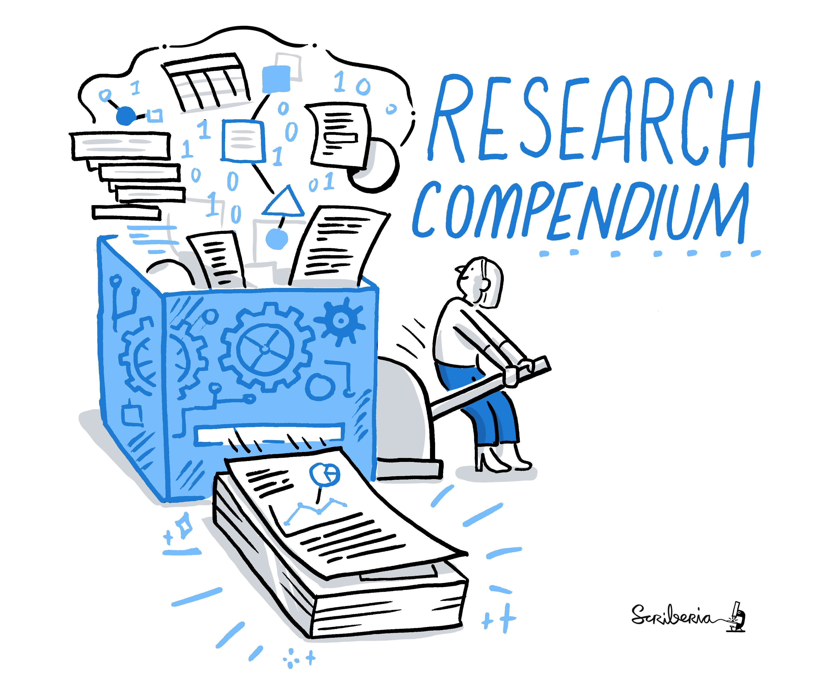

Thank you ! üôè
University Of Mannheim Open Science Office!
https://www.uni-mannheim.de/open-science/open-science-office/


Especially:
Philipp Zumstein ✨
David Morgan ✨
ReproHack hackpad ➡️ hackmd.io notepad

Who is my favorite animated character?
Stitch!


Additional Considerations
Reproducibility is hard!
Submitting authors are incredibly brave!
Thank you Authors! üôå
Without them there would be no ReproHack.
Show gratitude and appreciation for their efforts. üôè
Constructive criticism only please!
Selecting Papers
Information submitted by authors:
Languages / tools used (tags)
Why you should attempt the paper.
No. attempts No. times reproduction has been attempted
Mean Repro Score Mean reproducibility score (out of 10)
- lower == harder!
Register paper using template in hackpad:
### **Paper:** <Title of the paper reproduced> **Reviewers:** Reviewer 1, Reviewer 2 etc.

Useful User Perspectives
New User

Invested User

Feedback as a community member
Acknowledge author effort
Give feedback in good faith
Focus on community benefits and system level solutions

Help build convention on what a Research Compendium should be and how we should be able to use it

tl;dr: Don’t be this guy!

Did you enjoy ReproHacking? Get involved!
reprohack.org
Chat to us: 
Host your own event!
Look out for train-the-trainer events!
Submit your own papers!